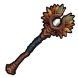

Cajado das estações
Cajado · Tier 6 · Nível 18
O tempo embranquece os cabelos sem envolver o amadurecimento.
Atributos
Ataque
230
Evasão
5%
Economia
Valor
45.000
Tempo de fabricação
1h 10min
XP do comerciante
21.500
Trabalhadores: Carpinteiro 15, Feiticeiro 11
Receita


Marcos do projeto
7
Tempo de fabricação -25%
18
-23 Madeira
32
Valor +25%
50
-23 Madeira
80
Chance de qualidade +1